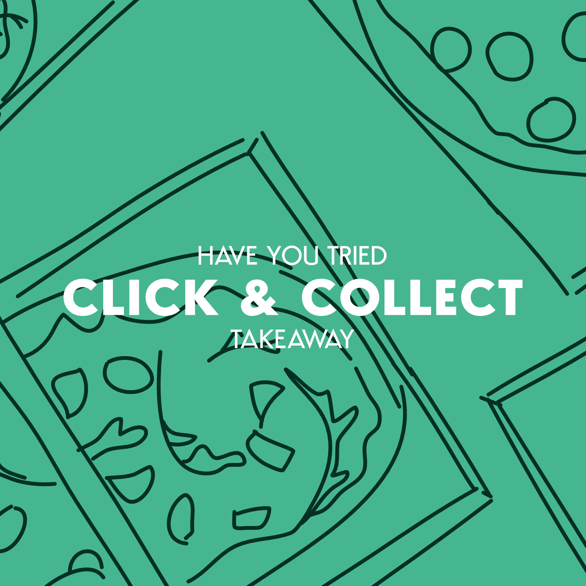
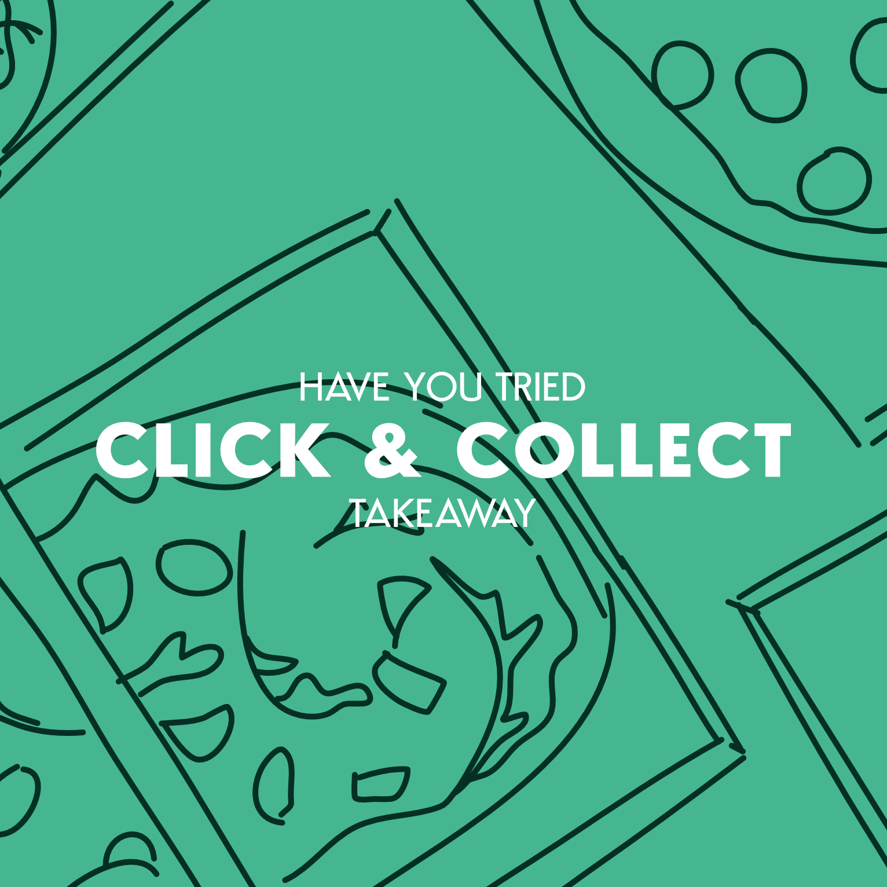

Line Art
A lot of the branding centres around this style of line art, so it can be used in combination with the colours and font to create marketing material that is clearly identifiable with the brand.
Covid-19
During the pandemic, the company was quick to take action with the implementation of advice signs. I created this and a handful of others to be shared on social media.